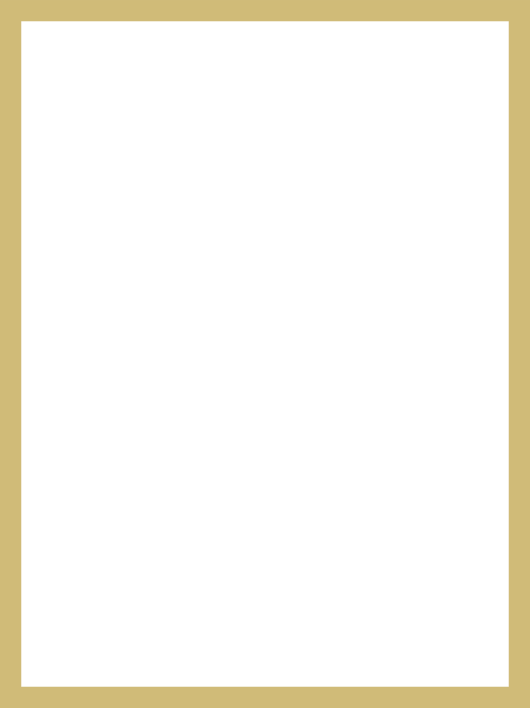
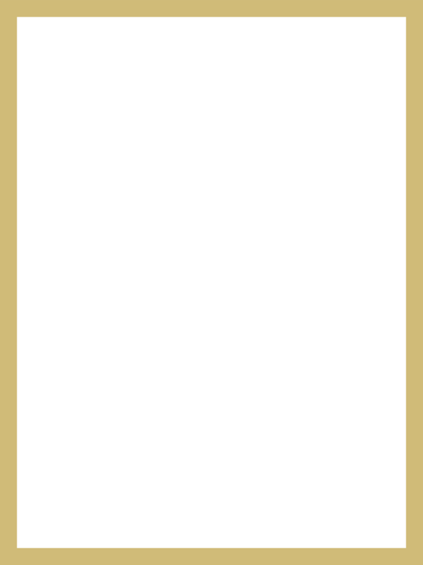

NOSOTROS
Nuestra Historia
Somos una empresa dedicada a Pianos acústicos
Mi familia en Pianos desde la Primera generación desde
1971.
La primera generación en Pianos inició desde la
adolescencia. En ovalo independencia y Varela - Breña
en una tienda y taller de mantenimiento de Pianos.
Se reconstruyo un PIANO HENRY RERZ FRANCES DE ESTUDIO.
Cambio de nuevo clavijero. Puente nuevo de la caja
armonica.
Y toda la encondadura nueva, cuerdas y bordones.
Mueble del piano completamente nuevo y moderno y
acabado.
La reconstrucción del Piano duro 1 año y 3 meses. En la
edad de adolescencia. En aquel tiempo.
En esos tiempos no habia importación para los Pianos.
Era dificil importar desde los almacenes desde otros
países.
Solo había pedidos de Pianos y los costos eran elevados .
En estos tiempos actuales las importaciones son
normales.